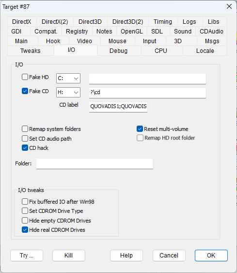

|
Fake HD drive |
FAKEHDDRIVE |
Every file searched with a full path starting with X:\, where X is the drive letter selected in the drop-down menu to the right (default C:\) is searched replacing X:\ with the path configured in the field to the right textbox. This makes it possible, for instance, to install old games in custom folders that only work if installed below C:, or to point to game files in deeper paths that are not supported by the program. A question mark as the first character in the path field stands for the target game folder (for instance, the value ?\hd\ means the 'hd' subfolder of the main folder where the hooked program is located). |
|
Fake CD drive |
FAKECDDRIVE |
Same as above, but with reference to fake CDRom drive X:\ (default D:\) In addition, all write access I/O operations on these files will return an error to simulate a read-only CD device type. At all practical effects, the program will detect a CD-ROM file system type. BEWARE: In case of multi-CD configurations, the field holds the pathname of the first virtual CD file system. All the additional CD file systems will be set by adding a suffix 'nn' to this value with 'nn' ranging from 02 to 09. For instance, if the field is set as "c:\myCD\cd", the files for CD2 will be serached in "c:\myCD\cd02" and so forth up to CD9 searched in "c:\myCD\cd09". It should be noted that while for the first/only CD terminating the field value with a backslash or not is indifferent, for all following virtual disks that will be different since "c:\myCD\cd02" is not the same folder as "c:\myCD\cd\02". |
|
CD label |
Defines the CD label (i.e. the volume name) of the CD virtually inserted in the fake CD drive. BEWARE: In case of multi-CD configurations, the field holds the labels of all CDs separated by a semicolon ";". For instance, CD labels for the game "Zork Nemesis - the Forbidden Lands" will have to be set as "ZORKNEM_I;ZORKNEM_II;ZORKNEM_III". BEWARE: None but the semicolon is treated as the separator for the labels. |
|
|
Remap system folders |
REMAPSYSFOLDERS |
Remaps the pathnames of the files that are located in the Windows system folders to a pathname local to the game folder. For instance, the pathname of the 'Windows' system folder that is usually located in "C:\Windows" is translated to the Windows subfolder of the current folder. This prevents writing/reading files to/from the system folders and could be helpful to make portable applications with local configuration data. It should be noted that the flag may require early injection to intercept operations before the first window creation. In addition, it is not always guaranteed that all the file accesses in the system folders could be intercepted and redirected. All the remapped folders will have to be created and be in existence before the usage of this flag. BEWARE: from https://learn.microsoft.com/en-us/windows/win32/api/winbase/nf-winbase-getprivateprofilestring : The system maps most .ini file references to the registry, using the mapping defined under the following registry key:HKEY_LOCAL_MACHINE\SOFTWARE\Microsoft\Windows NT\CurrentVersion\IniFileMapping This mapping is likely if an application modifies system-component initialization files, such as Control.ini, System.ini, and Winfile.ini. In these cases, the function retrieves information from the registry, not from the initialization file; the change in the storage location has no effect on the function's behavior. In order to let DxWnd access to the remapped system files Control.ini, System.ini, and Winfile.ini it is then necessary to prefix their pathname with a dot "." character. For instance the remapped entryes of "system.ini" will be read from the file ".system.ini". |
|
Set CD audio path |
SETCDAUDIOPATH |
The flag fixes a custom and known path for the ripped CD audio 'Music' folder. By default, the 'Music' folder is searched in the same folder where the hooked target program is located, but this could bring problems in several cases like these: 1) The hooked target is on a non-writable device like a CD-ROM file system. 2) Shared hook could be applied to many targets on different folders while all share the same CD music 3) The hooked target is created on the fly on a temporary and random folder whose name is unknown at the time of configuration. So, when the SETCDAUDIOPATH flag is set, DxWnd will search the music folders (that is, 'Music' and 'Music02', 'Music03' ... in case of multi-volume configuration) and their content (that is, the audio tracks files, 'tracklen.nfo' and 'mcihack.txt') on the folder that is specified into the fake CD path field. NOTE: It is not necessary for FAKECDDRIVE to be enabled to use the path field for the SETCDAUDIOPATH flag. If FAKECDDRIVE is disabled, the path will be used for the SETCDAUDIOPATH purpose only. |
|
CD hack |
CDHACK |
When this flag is set, DxWnd overrides the parameters of the fake CD drive using the data held in the configuration file cdinfo.txt located in the program execution folder. This is particularly useful to mimic parameters that are used, for instance, in simple copy protection schemas based on specific parameters. The cdinfo.txt has the syntax of a Windows configuration file and can hold the following values: In the room [geometry] there are the values (expressed in integer decimal notation) that will be returned by GetDiskFreeSpace system calls: SectorsPerCluster BytesPerSector NumberOfFreeClusters TotalNumbrOfClusters In the room [volume] there are the values that will be returned by GetVolumeInformation system calls: VolumeName: the CD label VolumeNameHex: the CD label expressed as a hexadecimal string, useful to set labels encoded with extended charsets fileSystemName: by default "CDFS" fileSystemNameEx: the fileSystemName expressed as a hexadecimal string serialNumber maxComponentLen fsFlags In case of multi-volume configurations, the volumes next to the first one are described in numbered rooms like [geometry2], [geometry3] ... and [volume2], [volume3] ... |
|
Reset multi-volume |
RESETMULTIVOLUME |
The CD volume selected by the CD changer can persist the termination of the controlled task and the termination of DxWnd itself, being cleared only by command or after a log-out or system restart. In some cases this can be not wanted because the controlled task requires to start always with the first CD1 mounted. This flag switches the configuration automatically to the CD1 when the task is started. |
|
Remap HD root folder |
REMAPROOTFOLDER |
Some old games install or create some files under the hard disk root folder where the operation is not allowed. This flag remap pathnames starting with "\" to the fake-HD folder. It was added to handle "Actua Soccer 2". |
|
Folder |
When you run a program through the DxWnd interface, the program execution path is not set by default. The program location folder is used as the execution folder. This works for most programs, but some need to start from a different path. Enter a path in this text box to specify a different execution path parameter. |
|
|
Fix buffered I/O after Win98 |
BUFFEREDIOFIX |
Windows 98 was the last platform to support asynchronous disk I/O from devices such as CD-ROMs. This flag suppresses requests for asynchronous mode, avoiding errors from this operation. |
|
Set CDROM Drive Type |
CDROMDRIVETYPE |
Simulates each disk device to appear as a CD-ROM type. This allows you to copy the content of some CDs onto a hard disk and override the disk type controls that form some very basic copy protection schemes. |
|
Hide empty CDROM drives |
HIDECDROMEMPTY |
Some old games didn't handle the possibility of having multiple CD-ROM devices and simply look for the game in the first available device. If you have physical and virtual CD-ROM devices in your system, it may become complicated to insert a physical CD on a virtual device (or vice versa). This flag hides any CD-ROM device that doesn't have a CD, from the list of available devices, so that you can simply unmount all the disks except for the desired one. |
|
Hide real CDROM drives |
HIDECDROMREAL |
Some old games didn't handle the possibility of having multiple CD-ROM devices and simply look for the game in the first CDROM device. If you want to map your CD image to a fake-CD folder, the operation could be impossible if the first CD drive letter is associated to a real or virtual CD drive. This flag hides all CD-ROM devices with the exception of the fake-CD drive that becomes the first and only drive available. |